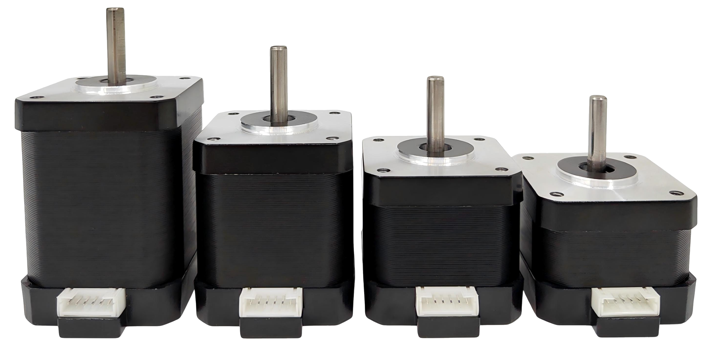

№ 01
The premise
Four machines,
one object.
Every servo axis used to be a small construction project — a motor here, a driver board there, a controller somewhere behind the panel, and an encoder bolted onto the back of it all.
The M17 Series collapses that pile into a single compact package: motor, motor driver, motion controller and encoder, integrated. What leaves the enclosure is not a bundle of signal wires but one RS-485 bus, which means several motors can be daisy-chained and driven from a single connection point.
Four models — M17-60, M17-48, M17-40 and M17-34 — give you flexible options to match a particular torque and size while keeping identical control characteristics. Choose on torque and price; the code you wrote for one runs unchanged on the others.
Each motor carries the sophisticated parts too: multiple operation modes, self-calibration, and built-in status monitoring through LED indicators. Control it from any platform — Mac, PC, Raspberry Pi, Arduino, ESP32 — with nothing more exotic than a low-cost RS485 adapter, which is exactly why the same part suits a teaching lab and a production cell.
Precise position control with trapezoid movement profiles, closed-loop control mode and comprehensive error handling; standard NEMA 17 mounting; a wide 12–24 V range. Wherever precise motion is needed — robotics, CNC machines, automated test equipment, scientific instruments — it is a reliable, flexible answer.
